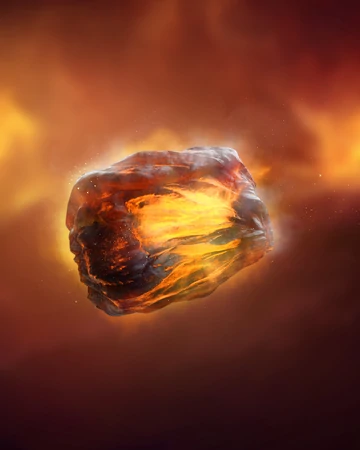
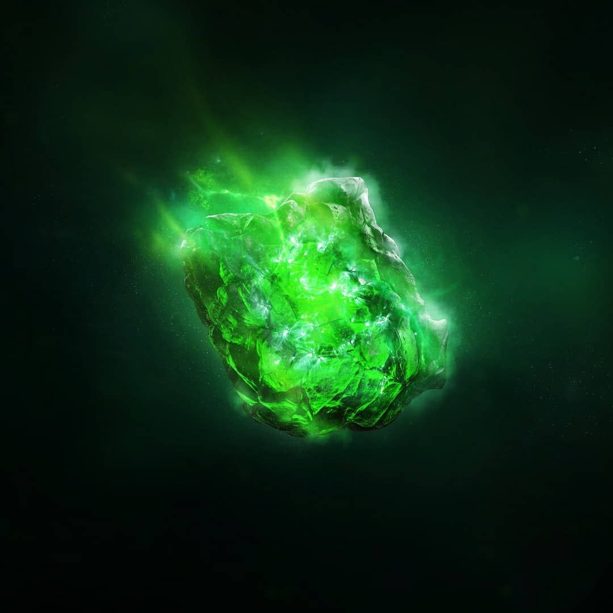
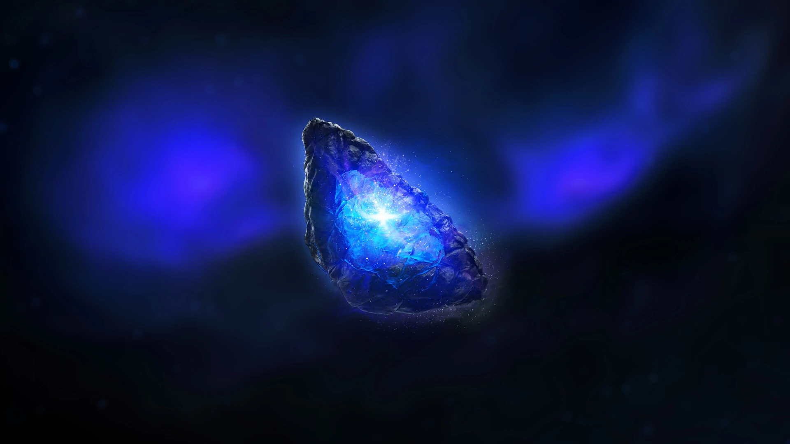
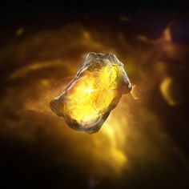
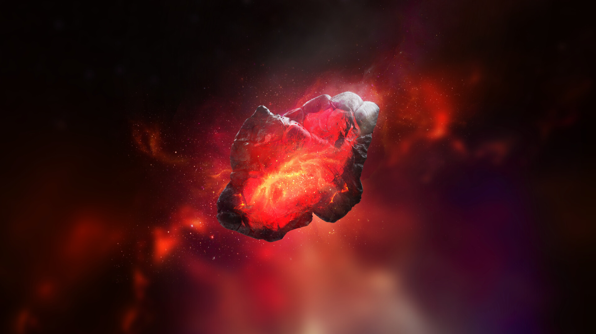
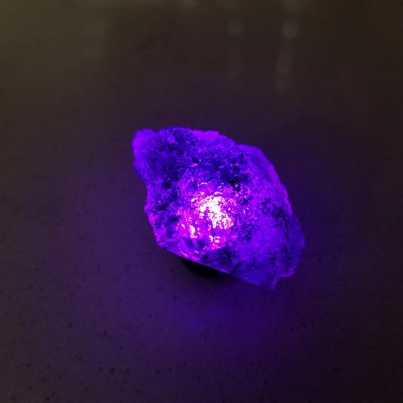

The Infinity Stones
| name | Color | Powers and capabilities | Image |
|---|---|---|---|
| Soul | Orange | The Soul Stone was one of the six Infinity Stones, the remnant of a singularity that predates the universe. For some time, it was kept on the planet Vormir under the watchful eye of Red Skull, before Thanos came to the planet in search of it and had to tragically sacrifice his beloved daughter Gamora to obtain it. |  |
| Time | Green | The Space Stone was one of the six Infinity Stones, the remnant of a singularity that predated the universe, which represented the element of space. Housed within the Tesseract, over the course of history it was wielded by many individuals, including Johann Schmidt of HYDRA, Mar-Vell of the Kree Empire, the Skrulls, and Loki of Asgard. During the Infinity War, the Tesseract was shattered by Thanos, who put the Space Stone inside his Infinity Gauntlet. After Thanos successfully wiped out half of life, he destroyed the Space Stone, along with the other Infinity Stones to prevent his work being undone. |  |
| Space | Blue | The Space Stone was one of the six Infinity Stones, the remnant of a singularity that predated the universe, which represented the element of space. Housed within the Tesseract, over the course of history it was wielded by many individuals, including Johann Schmidt of HYDRA, Mar-Vell of the Kree Empire, the Skrulls, and Loki of Asgard. During the Infinity War, the Tesseract was shattered by Thanos, who put the Space Stone inside his Infinity Gauntlet. After Thanos successfully wiped out half of life, he destroyed the Space Stone, along with the other Infinity Stones to prevent his work being undone. |  |
| Mind | Yellow | The Space Stone was one of the six Infinity Stones, the remnant of a singularity that predated the universe, which represented the element of space. Housed within the Tesseract, over the course of history it was wielded by many individuals, including Johann Schmidt of HYDRA, Mar-Vell of the Kree Empire, the Skrulls, and Loki of Asgard. During the Infinity War, the Tesseract was shattered by Thanos, who put the Space Stone inside his Infinity Gauntlet. After Thanos successfully wiped out half of life, he destroyed the Space Stone, along with the other Infinity Stones to prevent his work being undone. |  |
| Reality | Red | The Space Stone was one of the six Infinity Stones, the remnant of a singularity that predated the universe, which represented the element of space. Housed within the Tesseract, over the course of history it was wielded by many individuals, including Johann Schmidt of HYDRA, Mar-Vell of the Kree Empire, the Skrulls, and Loki of Asgard. During the Infinity War, the Tesseract was shattered by Thanos, who put the Space Stone inside his Infinity Gauntlet. After Thanos successfully wiped out half of life, he destroyed the Space Stone, along with the other Infinity Stones to prevent his work being undone. |  |
| Power | Purple | The Space Stone was one of the six Infinity Stones, the remnant of a singularity that predated the universe, which represented the element of space. Housed within the Tesseract, over the course of history it was wielded by many individuals, including Johann Schmidt of HYDRA, Mar-Vell of the Kree Empire, the Skrulls, and Loki of Asgard. During the Infinity War, the Tesseract was shattered by Thanos, who put the Space Stone inside his Infinity Gauntlet. After Thanos successfully wiped out half of life, he destroyed the Space Stone, along with the other Infinity Stones to prevent his work being undone. |  |
| alt="https://marvel.com.ru/"> |